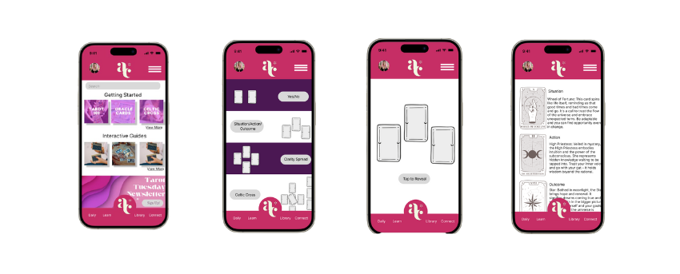
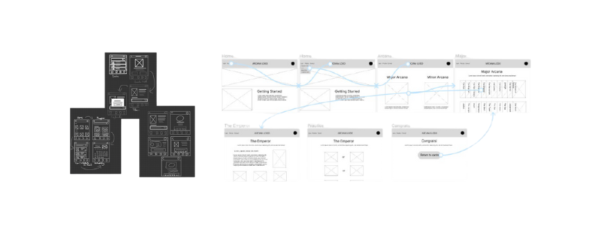

Arcana: A Tarot Learning Experience
Designer & Researcher: Kenyatta Ladd
Project Overview
Project Duration: March 2024 – April 2024
The Product: Arcana is a high-fidelity prototype for a web and mobile platform designed to make learning tarot accessible, structured, and confidence-boosting for users of all backgrounds.
The Problem: Many beginners struggle to find reliable, jargon-free, and supportive tarot resources online.
The Goal: To create an intuitive learning platform that fosters understanding, self-discovery, and confident interpretation of tarot readings.
My Role: UX Designer & Researcher
Responsibilities: User Research, Ideation, Wireframing, Prototyping
User Research & Insights
User research focused on tarot beginners like Amelia, who often face:
- Information Overload: Complex jargon and scattered resources
- Lack of Confidence: Fear of misinterpreting cards
- Fear of Judgment: Hesitancy to engage with online communities
- Unstructured Learning: No clear learning path across websites
Starting the Design
Paper & Digital Wireframes
Initial wireframes focused on simplifying the homepage with learning opportunities front and center. Features included a “Beginner’s Guide” and short keyword quizzes to reinforce learning.
Low-Fidelity Prototype
Refining the Design
Mockups & High-Fidelity Prototypes
I reworked the homepage layout by replacing the large logo with a welcome message and adding a clickable avatar. Navigation was simplified and color contrast improved for clarity.
Accessibility Considerations
- Alternative text needed for images
- Adjusting color scheme for readability
Takeaways
Impact: Arcana empowers curious learners by removing barriers and building confidence in tarot reading. It emphasizes clarity, structure, and supportive design.
What I Learned: Designing an educational tool requires iteration and fine-tuning even a single page. I'm excited to keep evolving Arcana based on real user feedback.
Next Steps
- Conduct additional usability testing with both novice and experienced tarot readers
- Build a more robust educational database
- Expand the online community and blog section